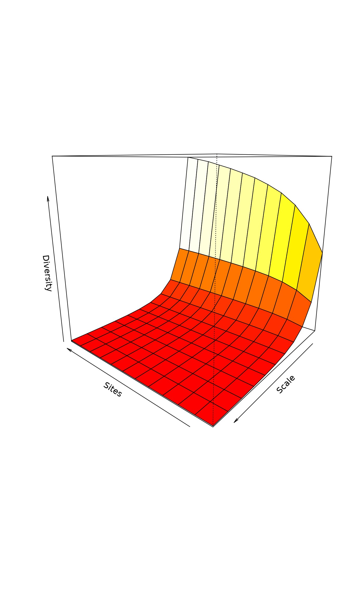
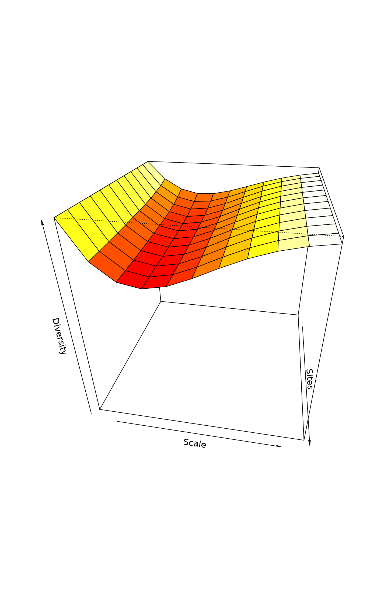
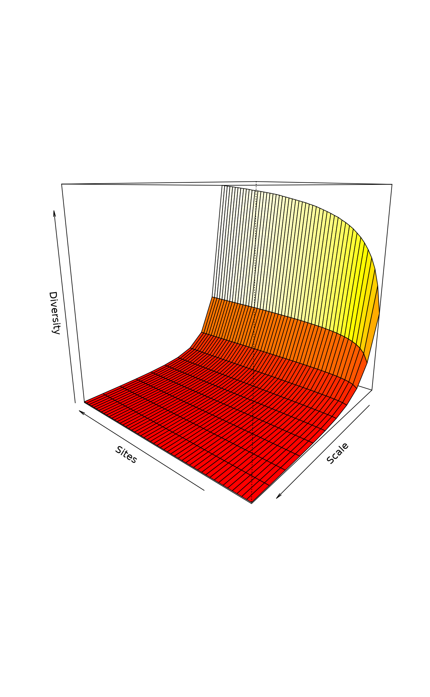
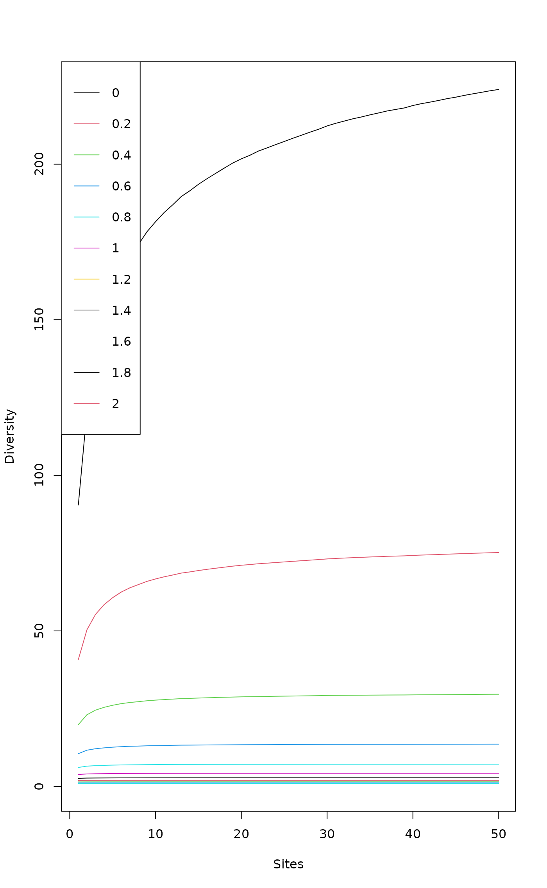
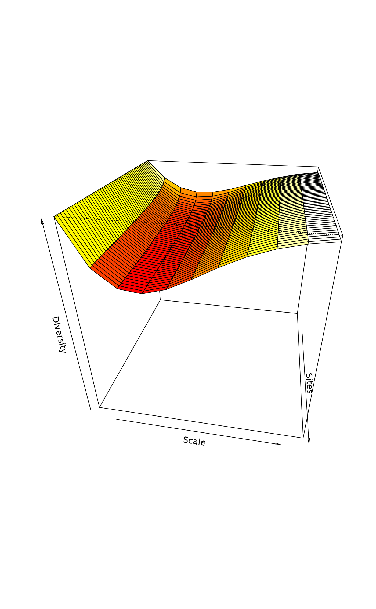

Tsallis Diversity and Corresponding Accumulation Curves
tsallis.RdFunction tsallis find Tsallis diversities with any scale or the corresponding evenness measures. Function tsallisaccum finds these statistics with accumulating sites.
Usage
tsallis(x, scales = seq(0, 2, 0.2), norm = FALSE, hill = FALSE)
tsallisaccum(x, scales = seq(0, 2, 0.2), permutations = 100,
raw = FALSE, subset, ...)
# S3 method for class 'tsallisaccum'
persp(x, theta = 220, phi = 15, col = heat.colors(100), zlim, ...)Arguments
- x
Community data matrix or plotting object.
- scales
Scales of Tsallis diversity.
- norm
Logical, if
TRUEdiversity values are normalized by their maximum (diversity value at equiprobability conditions).- hill
Calculate Hill numbers.
- permutations
Usually an integer giving the number permutations, but can also be a list of control values for the permutations as returned by the function
how, or a permutation matrix where each row gives the permuted indices.- raw
If
FALSEthen return summary statistics of permutations, and if TRUE then returns the individual permutations.- subset
logical expression indicating sites (rows) to keep: missing values are taken as
FALSE.- theta, phi
angles defining the viewing direction.
thetagives the azimuthal direction andphithe colatitude.- col
Colours used for surface.
- zlim
Limits of vertical axis.
- ...
Other arguments which are passed to
tsallisand to graphical functions.
Details
The Tsallis diversity (also equivalent to Patil and Taillie diversity) is a one-parametric generalised entropy function, defined as:
$$H_q = \frac{1}{q-1} (1-\sum_{i=1}^S p_i^q)$$
where \(q\) is a scale parameter, \(S\) the number of species in
the sample (Tsallis 1988, Tothmeresz 1995). This diversity is concave
for all \(q>0\), but non-additive (Keylock 2005). For \(q=0\) it
gives the number of species minus one, as \(q\) tends to 1 this
gives Shannon diversity, for \(q=2\) this gives the Simpson index
(see function diversity).
If norm = TRUE, tsallis gives values normalized by the
maximum:
$$H_q(max) = \frac{S^{1-q}-1}{1-q}$$
where \(S\) is the number of species. As \(q\) tends to 1, maximum is defined as \(ln(S)\).
If hill = TRUE, tsallis gives Hill numbers (numbers
equivalents, see Jost 2007):
$$D_q = (1-(q-1) H)^{1/(1-q)}$$
Details on plotting methods and accumulating values can be found on
the help pages of the functions renyi and
renyiaccum.
Value
Function tsallis returns a data frame of selected
indices. Function tsallisaccum with argument raw = FALSE
returns a three-dimensional array, where the first dimension are the
accumulated sites, second dimension are the diversity scales, and
third dimension are the summary statistics mean, stdev,
min, max, Qnt 0.025 and Qnt 0.975. With
argument raw = TRUE the statistics on the third dimension are
replaced with individual permutation results.
References
Tsallis, C. (1988) Possible generalization of Boltzmann-Gibbs statistics. J. Stat. Phis. 52, 479–487.
Tothmeresz, B. (1995) Comparison of different methods for diversity ordering. Journal of Vegetation Science 6, 283–290.
Patil, G. P. and Taillie, C. (1982) Diversity as a concept and its measurement. J. Am. Stat. Ass. 77, 548–567.
Keylock, C. J. (2005) Simpson diversity and the Shannon-Wiener index as special cases of a generalized entropy. Oikos 109, 203–207.
Jost, L (2007) Partitioning diversity into independent alpha and beta components. Ecology 88, 2427–2439.
Author
Péter Sólymos,
solymos@ualberta.ca, based on the code of Roeland Kindt and
Jari Oksanen written for renyi
See also
Accumulation routines are based on functions
renyi and renyiaccum, and can be plotted
with functions plot.renyi and
plot.renyiaccum. Alternative plots are provided by
ggvegan. An object of class tsallisaccum can be
displayed with dynamic 3D function rgl.renyiaccum in the
vegan3d package. See also settings for persp.
Examples
data(BCI)
i <- sample(nrow(BCI), 12)
x1 <- tsallis(BCI[i,])
x1
#> 0 0.2 0.4 0.6 0.8 1 1.2 1.4 1.6
#> 11 86 39.29329 19.38852 10.40364 6.082374 3.859814 2.636380 1.917208 1.467852
#> 9 89 39.96271 19.39982 10.27203 5.952153 3.761331 2.568371 1.872010 1.438318
#> 27 98 43.84660 21.16041 11.11093 6.371476 3.980281 2.687154 1.938584 1.476662
#> 49 90 40.07436 19.37264 10.25622 5.958648 3.778851 2.587992 1.889436 1.452206
#> 50 92 41.30206 20.08829 10.66313 6.187254 3.906616 2.659292 1.929248 1.474476
#> 4 93 41.96845 20.49096 10.89339 6.315044 3.976563 2.697452 1.950144 1.486011
#> 21 98 43.64355 21.01620 11.03685 6.340108 3.969925 2.685700 1.940242 1.478977
#> 15 92 41.60244 20.33533 10.81897 6.277031 3.956635 2.686972 1.944677 1.483199
#> 22 90 40.16368 19.41416 10.25630 5.939677 3.755413 2.566788 1.872586 1.439722
#> 5 100 44.20598 21.17686 11.08126 6.350040 3.969940 2.683412 1.937940 1.477217
#> 37 87 39.50236 19.34899 10.30864 5.993570 3.791703 2.588211 1.884483 1.446093
#> 36 91 40.76595 19.77916 10.48193 6.081803 3.846109 2.625076 1.910150 1.463936
#> 1.8 2
#> 11 1.171254 0.9658398
#> 9 1.152087 0.9534257
#> 27 1.174682 0.9669962
#> 49 1.162505 0.9609552
#> 50 1.174993 0.9679784
#> 4 1.181429 0.9716117
#> 21 1.176759 0.9686058
#> 15 1.180006 0.9709057
#> 22 1.153640 0.9548316
#> 5 1.175553 0.9678267
#> 37 1.156955 0.9565015
#> 36 1.169232 0.9648567
plot(x1)

diversity(BCI[i,],"simpson") == x1[["2"]]
#> 11 9 27 49 50 4 21 15 22 5 37 36
#> TRUE TRUE TRUE TRUE TRUE TRUE TRUE TRUE TRUE TRUE TRUE TRUE
x2 <- tsallis(BCI[i,], norm=TRUE)
x2
#> 0 0.2 0.4 0.6 0.8 1 1.2 1.4
#> 11 1 0.9081594 0.8567331 0.8377008 0.8430823 0.8642843 0.8927066 0.9212566
#> 9 1 0.8982235 0.8387276 0.8137568 0.8156375 0.8358867 0.8656242 0.8971059
#> 27 1 0.9112896 0.8605499 0.8410587 0.8456725 0.8661975 0.8940909 0.9221774
#> 49 1 0.8925852 0.8316222 0.8082153 0.8134945 0.8377231 0.8709199 0.9046665
#> 50 1 0.9036351 0.8503796 0.8315870 0.8385564 0.8618931 0.8922712 0.9221556
#> 4 1 0.9101799 0.8614882 0.8452139 0.8528120 0.8752597 0.9037665 0.9313684
#> 21 1 0.9070695 0.8546849 0.8354510 0.8415091 0.8639438 0.8936072 0.9229664
#> 15 1 0.9102071 0.8608373 0.8437404 0.8507238 0.8729284 0.9015588 0.9295308
#> 22 1 0.8945746 0.8334045 0.8082215 0.8109045 0.8325271 0.8637842 0.8965990
#> 5 1 0.9038026 0.8502581 0.8308757 0.8372445 0.8602030 0.8904867 0.9204832
#> 37 1 0.9044443 0.8487164 0.8255079 0.8275669 0.8468656 0.8750113 0.9047013
#> 36 1 0.8998669 0.8431295 0.8216927 0.8272622 0.8505725 0.8820846 0.9137994
#> 1.6 1.8 2
#> 11 0.9455721 0.9640735 0.9770705
#> 9 0.9251745 0.9475646 0.9641383
#> 27 0.9460502 0.9641597 0.9768635
#> 49 0.9336632 0.9558968 0.9716325
#> 50 0.9471031 0.9657020 0.9784999
#> 4 0.9540821 0.9707655 0.9820591
#> 21 0.9475331 0.9658643 0.9784896
#> 15 0.9527060 0.9698220 0.9814590
#> 22 0.9256369 0.9486075 0.9654409
#> 5 0.9456409 0.9644767 0.9775050
#> 37 0.9310866 0.9520532 0.9674958
#> 36 0.9407648 0.9611954 0.9754595
plot(x2)

mod1 <- tsallisaccum(BCI)
persp(mod1)

plot(mod1)

mod2 <- tsallisaccum(BCI, norm=TRUE)
persp(mod2, theta=100, phi=30)
